Natura areas and an inset map in QGIS
In this blog post, we’ll explore how select specific features from layer and how to add an inset map in QGIS.
Intro
This post will focus on adding a inset reference map. In this step, we will also include natural protected areas in the Baltic Sea, along with their names.
Shapefiles
To download shapefiles for nature-protected areas, start with the European Environment Agency (EEA). The EEA provides comprehensive coverage of Natura 2000 sites, making it a reliable and complete source for this analysis.
Another possible source is BSH which also offers relevant spatial data. However, this dataset does not include part of the Pomeranian Bay, specifically the Odra Bank area, and is therefore less complete for this region.
As noted in this publication, the northern and outer roadstead of the ports of Szczecin and Świnoujście are subject to differing interpretations. Germany considers this area to be part of its Exclusive Economic Zone, while explicitly stating that it does not assert any rights or obligations vis-à-vis Poland. From the Polish perspective, this area is regarded as part of the Polish territorial sea.
Select areas of interest
The shapefile contains data from multiple countries. Once it is loaded into the project, you can visualize all features on the map.
To focus only on the areas of interest, first enable the Attributes Toolbar by going to View > Toolbars > Attributes Toolbar.
Then, select the Identify Features tool and click directly on the polygon you are interested in. This allows you to inspect its attributes and determine which features to keep for your analysis.
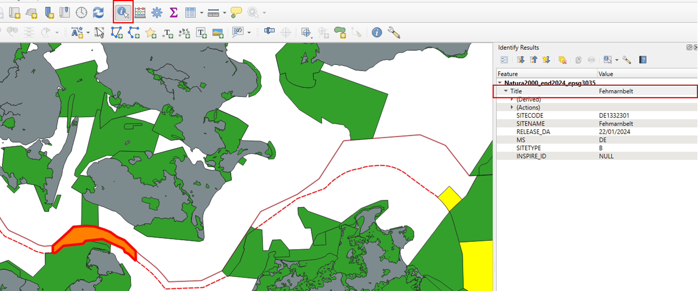
In the attributes window, locate the Title or SITENAME field. From there, select Copy Attribute Value to capture the name of the site you want to work with.
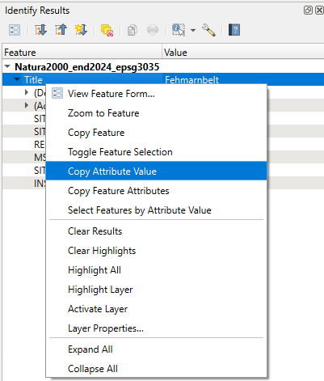
For the German part of the Baltic Sea, the areas of interest include the following sites:
- Fehmarnbelt
- Kadetrinne
- Westliche Rönnebank
- Adlergrund
- SPA Pommersche Bucht
- Pommersche Bucht mit Oderbank
Now, return to the shapefile layer and open its Attribute Table to view and work with the full list of features and their associated information.
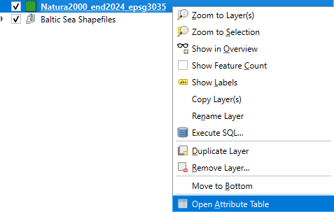
Next, click on Select Features by Expression (the ε icon). In the expression window, enter the following query:
“SITENAME” IN ( ‘Fehmarnbelt’, ‘Kadetrinne’, ‘Westliche Rönnebank’, ‘Adlergrund’, ‘SPA Pommersche Bucht’, ‘Pommersche Bucht mit Oderbank’ )
Then click Select Features. The corresponding polygons should now be highlighted on the map, indicating that these protected areas have been successfully selected.
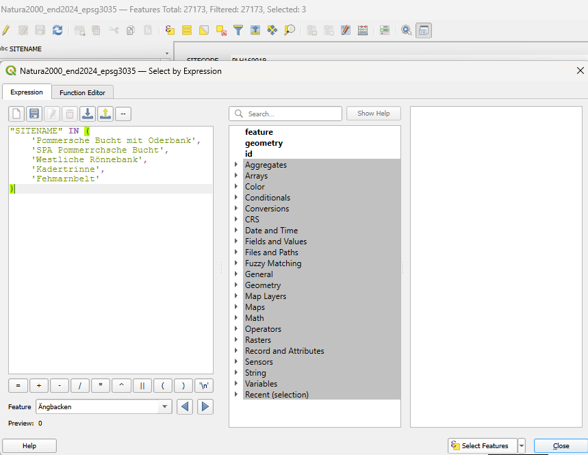
To save your selected features, right-click on the layer. From the menu that appears, choose Export and then select Save Selected Features As….
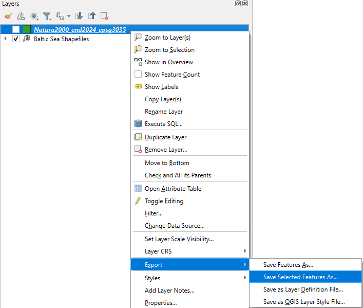
Once you save your selected features, there’s no need to reload them, they should appear automatically in your project.
For the polygon layer, I changed the style to a filled pattern to make it more visually distinct. While working on it, I noticed some polygons were duplicated, so I removed the extras. To do this, I opened the attribute table, clicked the Edit button (the yellow pencil), and deleted the unwanted features.
Next, I returned to the Print Layout. There, I added the names of each area to make the map more informative and easier to read.
Inset map
With your map elements in place, select the item and go to Item Properties. Under Layers, enable Lock Layers to prevent any changes while you continue working.
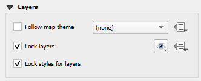
Next, add a new map in the corner to provide additional context or detail.
To clearly distinguish this inset map from the main map, add a frame around it. I recommend making the frame at least 1 mm thick so it stands out effectively.
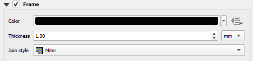
Here, I reduced the tone of the country shapefile so it appears more distant, giving the main map features greater visual prominence.
Manual delimiting area
After that, I created a new shapefile from scratch to add a rectangle that helps delimiting the study area. This step can be skipped, but I personally like to use it for reference.
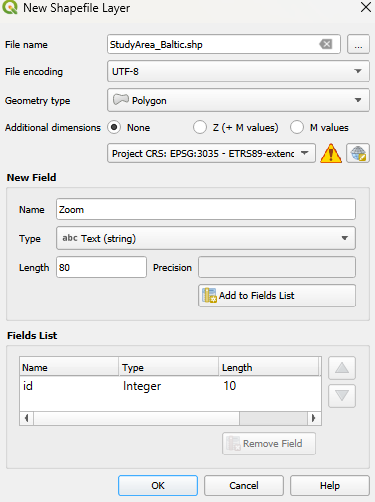
For this, right-click on the new shapefile and select Toggle Editing to start editing.
Then, go to View > Toolbars and enable the Digitizing Tools toolbar. From there, choose Add Polygon Feature to begin drawing your new polygons on the map.
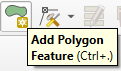
After selecting Add Polygon Feature, I created the polygon.
This ensures that when the map scale changes, the polygon maintains its shape and position. I spent some time adjusting the rectangle to fit the exact coordinates, working by keeping the layout open on one screen while making modifications on the other for precision
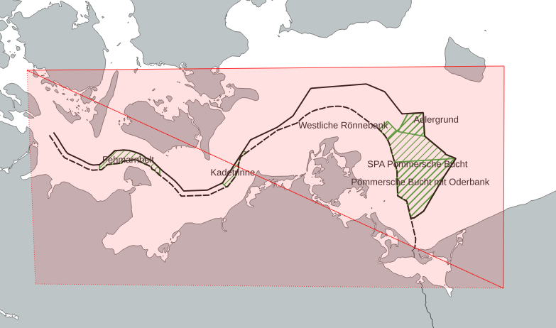
Final
Finally, the map shows the natural protected areas along with their names, and includes an inset reference map in the corner for context.
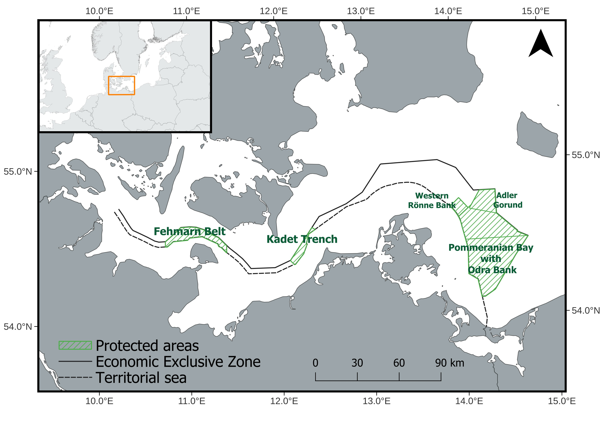
This map was inspired by this example of natural protected areas.
The name of the sites were obtain from this publication on Natura 2000 sites in the Baltic Sea.
For more details on the map’s features, please refer to the previous posts.
Please consider giving credit to European Environment Agency (EEA) when using these shapefiles.
{kind=link}